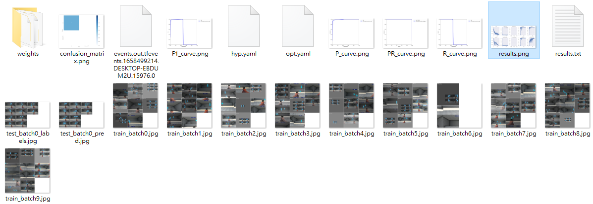
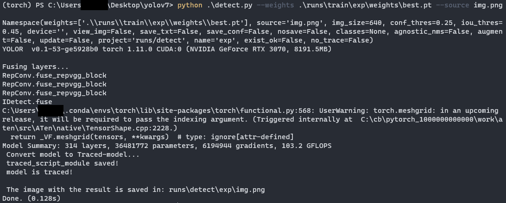

YOLOv7 on Windows (二) 訓練自己的資料集
準備資料集
將標註好的資料集放在一個資料夾內並取名為 all，資料集需為 YOLO 的格式，YOLO 格式為一張圖片搭配一個 txt 檔，如果是用 labelImg 標註應該還會有一個 classes.txt 的檔案，裡面放的就是你標註的 class 名稱，我準備了 60 張圖片，只有一個 class，整個看起來會像這樣

在 yolov7 的資料夾內建立一個資料夾取名為 mydataset，並將資料集放到裡面，
由於將資料分割的步驟比較繁雜，我寫了一隻程式來分割，下載這隻程式並放到 mydataset 的資料夾內
做完這一步看起來會像這樣
需要注意的是資料夾的名稱必須為 all，並且裡面要有 classes.txt，若沒有請自行新增，並打上自己標註的 class 名稱
之後直接執行並帶入要作為 validation set 的圖片數量，程式會隨機取出
以我來說我想要 10 張圖片作為 validation set
python splitFile.py 10
執行完後會像這樣
到這裡就完成資料集的準備了 (我這邊沒有準備 test set，如果想要的話按照格式新增即可)
建立配置檔
我們已經將資料準備好了，接下來要建立一些配置檔讓 YOLO 知道我們的資料在哪裡
先到 .\cfg\training\，複製 yolov7.yaml 並改名為 yolov7_custom.yaml (這裡複製 yolov7.yaml 是因為準備用 yolov7.pt 作為預訓練的模型，如果選擇其他模型就複製那個 yaml)
開啟 yolov7_custom.yaml 並將第二行的 80 改為你資料集的 class 數量，以我的來說是 1
接著到 .\data\ 新增一個文字檔並改名為 mydata.yaml，並貼上下面的內容
1 | # train and val data as 1) directory: path/images/, 2) file: path/images.txt, or 3) list: [path1/images/, path2/images/] |
如果你前面和我的命名都相同，只要修改 nc 及 names 即可，nc 一樣為你資料集的 class 數量，names 為你 class 對應的名稱 (若有多個 class 需注意順序)，否則 train 跟 val 的路徑請修改成你的路徑，若有準備 test set 也記得輸入路徑
到這裡所有的準備就都完成了，可以開始訓練模型了!
訓練模型
回到 yolov7 的路徑下
python train.py --workers 8 --device 0 --batch-size 8 --data .\data\mydata.yaml --img 640 640 --cfg .\cfg\training\yolov7_custom.yaml --hyp .\data\hyp.scratch.p5.yaml --weights .\yolov7.pt
- batch-size: 根據顯卡的內存來設置，一般為 8 的倍數，數值越大佔用內存越多
- img: 兩個數字，依序代表訓練時壓縮圖片的 size 和預測時壓縮圖片的 size，簡單來說它會將你的圖片壓成該 size 並做訓練/預測
- data: 指定剛剛配置的檔案
- cfg: 指定剛剛配置的檔案
- weights: 指定預訓練的模型 (也可換成其他官方提供的模型)
根據自己的需求修改參數，若有修改其他參數的需求可執行 python train.py help 查看
修改完後直接執行就開始訓練了，訓練時間受電腦性能及資料集大小影響，我 60 張照片，300 epochs 差不多訓練 20 分鐘左右
訓練完成後可到 .\runs\train\exp 查看訓練的成果，這裡會記錄訓練過程

一般來說看 results.png 即可
若有正常訓練的話 Precision 應該會越來越高
到這裡就訓練成功了，訓練好的權重位於 .\runs\train\exp\weights\best.pt
測試模型
回到 yolov7 的路徑下執行
python detect.py --weights 權重路徑 --source 要偵測的圖片或影片

預測的結果一樣會在 .\runs\detect\exp (若執行過預測的話 exp 會帶一個數字，數字最大的就是最新的結果)
可以看出雖然只有 50 張圖片做訓練，效果還是很不錯的，但也是因為場景較單純
下一篇文章將討論深度學習物件偵測與 FPS 遊戲的關係，這也是為甚麼我準備 aimlab 的資料來做訓練的原因